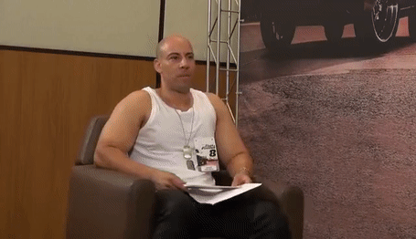

South America Memes
South America Memes, South América Memes ou SAM é um canal do Youtube e página do Facebook de entreterimento com foco em memes. A página no Facebook se encontra com 3 milhões e quinhentas mil curtidas, enquanto o canal do Youtube tem 1 milhão e novecentos mil inscritos.
História
A South America Memes começou em outubro de 2015, quando Gabriel Félix, um jovem de 18 anos, decidiu fazer um grupo para brincar com amigos. Em poucos meses o grupo tinha milhares de membros postando conteúdo gratuitamente e no grupo. Atualmente, segundo Gabriel, a página conta com 30 voluntários que moderam o canal, as páginas e os grupos.
Memes
Sósia do Vin Diesel
Um dos memes brasileiros mais famosos de 2017, os sósias do Vin Diesel viralizaram na internet e arrancaram sorrisos de milhares de pessoas. Com expressões icônicas e reações bizarras, tornaram-se alvo de memes em todo o Brasil e, consequentemente, um sucesso nas redes sociais
Em dezembro de 2016, o programa “Pânico na Band” preparou uma de suas clássicas trollagens, dessa vez com dois sósias do Vin Diesel. Foi assegurado que eles conheceriam o verdadeiro Vin Diesel e o entrevistariam em sua pequena passagem pelo Brasil. Mas não foi o que aconteceu.
Eis Que...
Outro meme que ficou muito famoso foram os memes com a frase "Eis que..." inicialmente se refirindo a mulheres bonitas dignas de nota 10/10. Porém com o passar do tempo foi utilizado para os mais diversos memes tanto engraçados quanto bizarros.
As famosas finalições de videos
Impossível esquecer as finalizações dos memes da SAM. Foram diversas finalizações diferenstes, tanto com a musica do seriado Harnold, música de XXXTentation, e outras também. E nada mais digno do que finalizar a wiki com uma das finalizações.